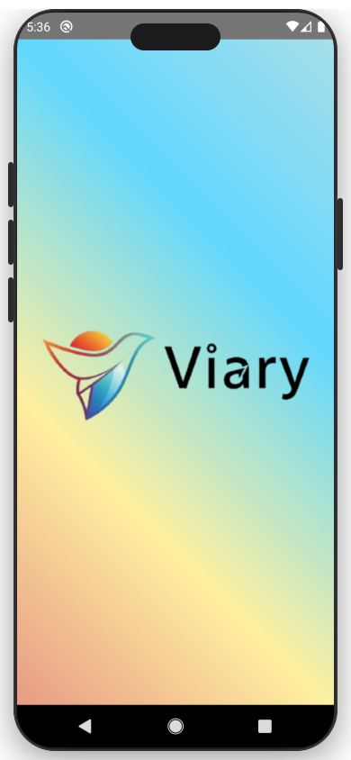
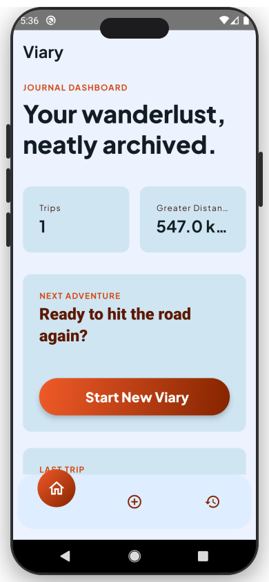
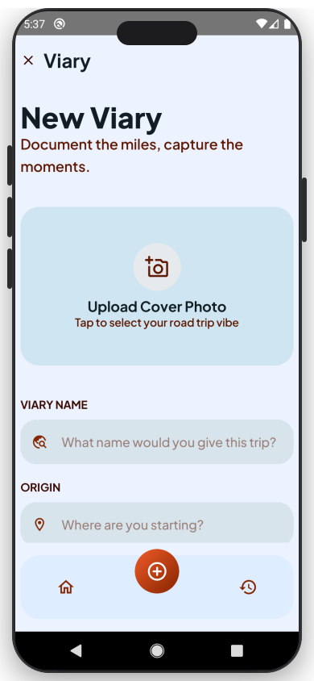
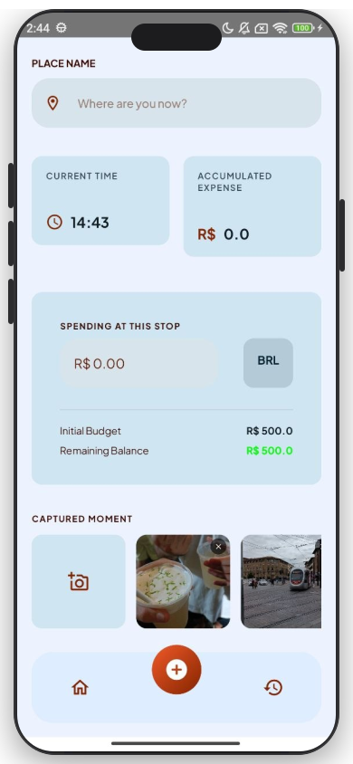
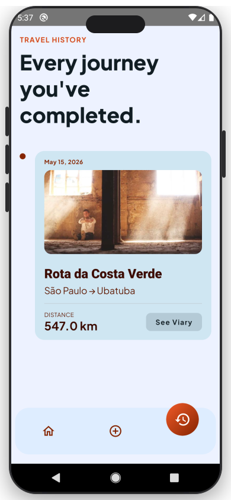
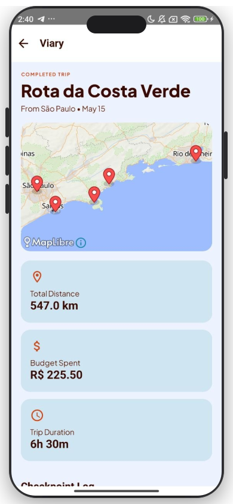

Cada parada, cada gasto, cada memória — registrada com precisão. Do GPS ao relatório final, tudo em um só lugar.

Pare de confiar só na memória. Registre cada momento, cada gasto e cada km percorrido — sem esforço, sem perder nada.
Adicione checkpoints ao longo da rota com nome do local, valor gasto, horário e fotos. A história da viagem fica completa e organizada.
Defina um orçamento na largada e veja o saldo diminuir em cada parada. Nunca mais chegue no destino sem saber quanto gastou.
Ao finalizar, você tem um mapa interativo com todos os pontos percorridos, uma timeline das paradas e uma galeria de fotos.
Uma interface limpa e intuitiva que sai do caminho e deixa você focar no que importa: a viagem em si.
A identidade do app te recebe com animação ao iniciar

Viagem ativa, distância e tempo atualizados em tempo real

Nome, origem, orçamento inicial e clima da viagem

Registre cada parada com local, gasto e fotos

Todas as viagens concluídas reunidas em um só lugar

Mapa interativo, timeline e galeria da viagem finalizada
Do início ao relatório final, tudo acontece de forma natural. Você viaja, o Viary cuida do resto.
Dê um nome, defina a origem, escolha o clima e estabeleça seu orçamento inicial.
Em cada checkpoint, anote o local, o valor gasto e adicione fotos da parada.
Enquanto você viaja, o app registra distância percorrida e tempo decorrido em segundo plano.
Ao finalizar, acesse o mapa da rota, a timeline de paradas e a galeria organizada por checkpoint.
Pensado para quem viaja de verdade — cada detalhe existe porque faz diferença no caminho.
Distância e duração atualizadas continuamente enquanto você está na estrada.
Saldo atualizado a cada checkpoint. Você sempre sabe quanto ainda tem para gastar.
Fotos organizadas automaticamente por checkpoint, não apenas por data.
Visualize toda a rota percorrida com marcadores para origem, paradas e destino final.
Todas as suas aventuras anteriores disponíveis para revisitar a qualquer momento.
Registre o vibe do dia: ensolarado, nublado, chuvoso ou frio.
Detecção automática do país para exibir o símbolo de moeda correto nos gastos.
Tudo salvo localmente no dispositivo. Sem depender de internet para registrar a viagem.